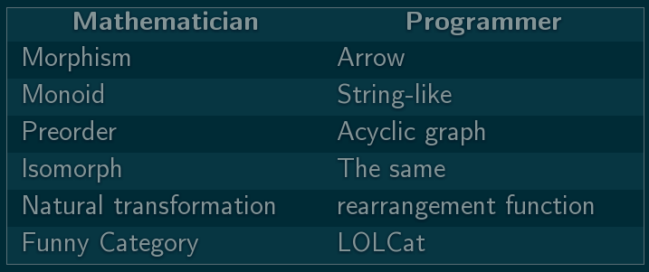
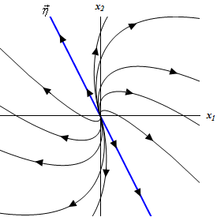
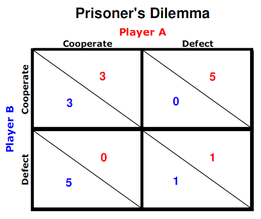
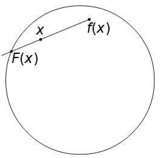
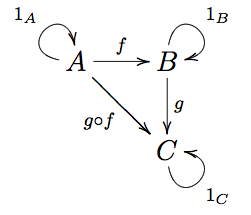
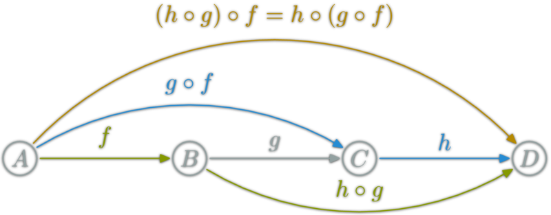
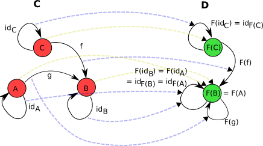

Introduction To Haskell
Lecture 12
Category Theory
Proposed title: Do You Even Lift?
Category Theory
Not really about Cat and Glory...allows one to see the forest rather than the individual trees, and offers the possibility for study of the structure of the entire forest, in preparation for the next stage of abstraction - comparing forests.
Terminology
History
Roots in algebraic topology in the early 1940s by Eilenberg and Mac Lane
Why Category Theory?
It provides a powerful language.
It can translate difficult problems to easy ones.
It features strong abstractions and attempts to unify separate ideas.
Brouwer Fixed-Point Theorem
Category Theory in ActionA continuous function from a unit circle to itself must have a fixed point.
(Image © Jack E.)
Implications of Brouwer's Theorem
If you crumple up one sheet of paper and place it on top of a flat sheet, then at least one point will be directly over it's corresponding point.
After sloshing around a cup of coffee, at least one point will always remain in the same spot.
Brouwer's Theorem assures existence of solutions to some differential equations.
Brouwer's Theorem assures existence of equilibria in Game Theory.
|  |  |
Proof (Step 1)
Let D be the unit-circle disk.
Let S be the surface of the unit-circle.
Lemma: There is no continuous function
h: D → S that leaves each point on S fixed.
Proof of Lemma (Step 2)
Using a Functor, we can transform one Category to another by preserving identities and compositions.
|
|
|
|
|
|
|
Proof of Lemma (Step 3)
By instead examining the Category of Groups, we can conclude that no such group homomorphism g: 0 → Z can exist.
We have proved the Lemma.
Proof (The Build Up)
GIVEN: Lemma: There is no continuous function
F: D → S that leaves each point on S fixed.
SHOW: A continuous function f: D → D must have a fixed point
Take a moment, and try this by yourself.
Proof (Fin)
...and now, THE DROP!
By way of contradiction, assume ∀x∈D: x ≠ f(x)
Then we can always form the function F: D → S that leaves each point on S fixed.
Contradiction. GG.
Definition: Category
A Category C is a collection of Ob(C) and Ar(C).

Ob(C) are the objects of C. Ar(C) are the "arrows" or morphisms of C.Each f:A→B ∈ Ar(C) has it's A and B chosen from Ob(C).
If f:A→B and g:B→C, then there always exists h = g∘f: A→C For every A ∈ Ob(C), there is an identity function idA: A→A.Axioms
Left and right identity: f∘idA = idA∘f
Associativity: h∘(g∘f) = (h∘g)∘f

Question Time!
Examples of Categories
Hask
Ob(Hask) = the Haskell types. (Bool, [Char], ...)
Ar(Hask) = the Haskell functions. (head, not, ...)
The identity function is id :: a -> a
The axioms are satisfied
Left and right identity: f∘id = id∘f
Associativity: h∘(g∘f) = (h∘g)∘f
Functor
Functor F: C→D is a transformation from Category C to Category D
 It maps objects in C to objects in D, and functions in C to functions in DFunctor Axioms:
- F(idA) = idF(A)
- F(f∘g) = F(f)∘F(g)
Functors in Haskell
In Haskell, a Functor is a typeclass for things that can be mapped over.
Prelude> fmap odd (Just 3) -- Maybe is a Functor
Just True
Prelude> fmap odd [1..5] -- a list is a Functor
[True,False,True,False,True]
Maybe Functor
1. The type constructor transforms anything of type a to Maybe a
Like transforming an object in C to an object in D.
Maybe derives the Functor typeclass as follows:
instance Functor Maybe where
fmap f (Just x) = Just (f x)
fmap _ Nothing = Nothing
2. fmap transforms a function f: a→b
to Maybe a → Maybe b.Maybe Functor (Cont.)
We just showed that Maybe transforms objects and functions over from the Hask category to the Maybe subcategory.
The Functor Axioms are satisfied:
- fmap id = id
- fmap (f . g) = fmap f . fmap g
Monads
A Monad is a functor from a Category to itself: M: C→C
And, for every X ∈ Ob(C)
unit: X→M(X)
join: M(M(X))→M(X)
class Functor m => Monad m where
return :: a -> m a
(>>=) :: m a -> (a -> m b) -> m b
Prelude> import Control.Monad
Prelude Control.Monad> :t join
join :: Monad m => m (m a) -> m a
The Monad Laws
-
join ∘ M(join) = join ∘ join
Collapsing the inner two layers first, then that with the outer layer is exactly the same as collapsing the outer layers first, then that with the innermost layer.
-
join ∘ M(unit) = join ∘ unit = id
Applying return to a monadic value, then joining the result should have the same effect whether you perform the return from inside the top layer or from outside it.
- unit ∘ f = M(f) ∘ unit
- join ∘ M(M(f)) = M(f) ∘ join
The Power of Abstraction
Category theory powers Haskell's generalizability.
Thanks for your time!

Homework: Fill out the Course Evaluation